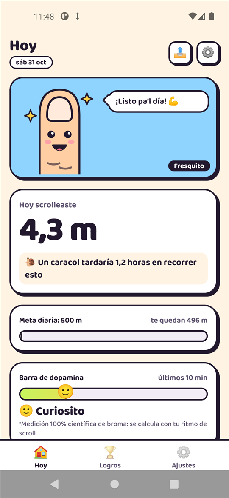
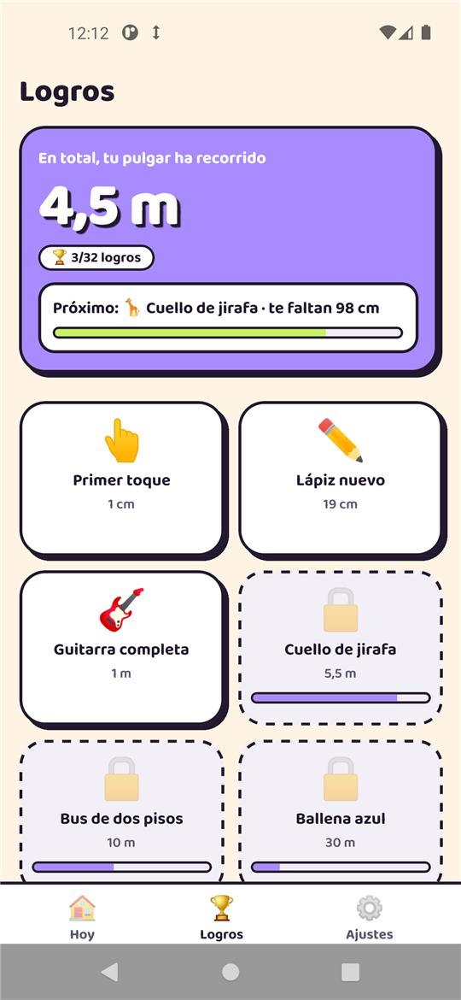
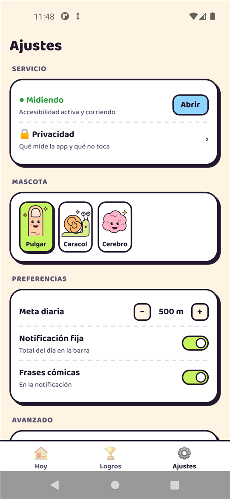
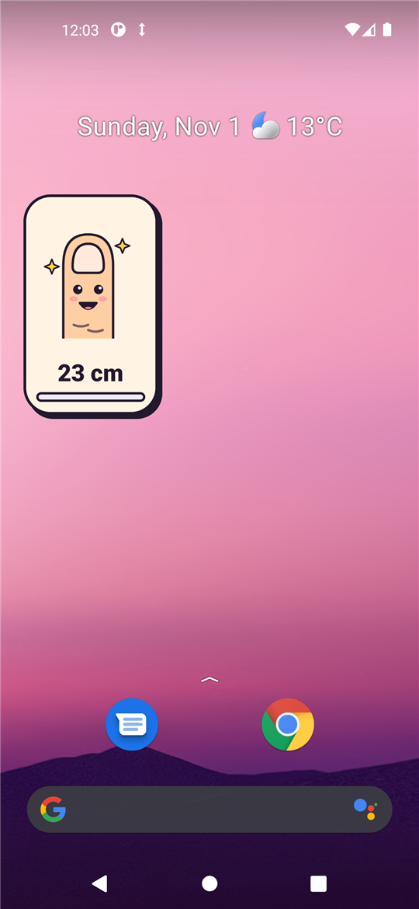
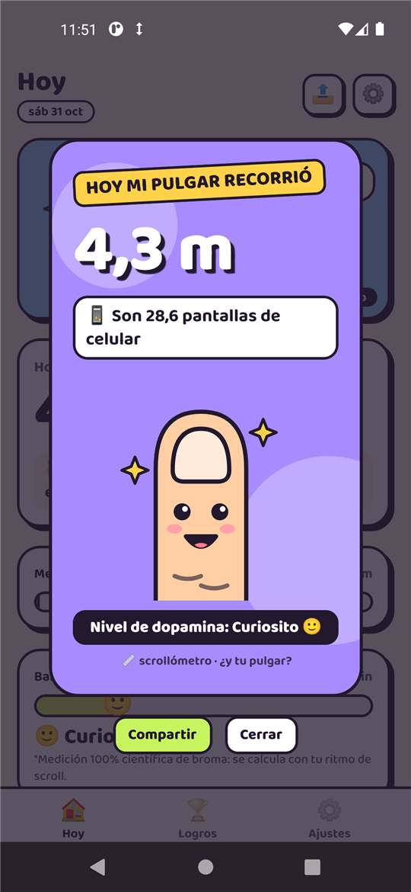
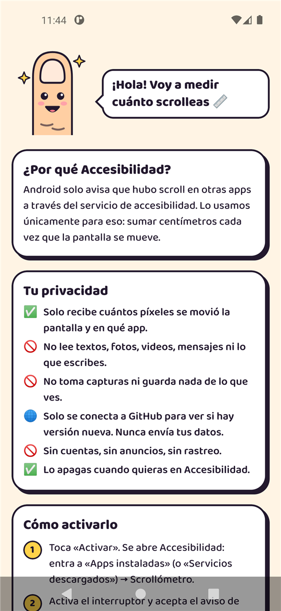

¿Cuánto mide tu scroll?
Scrollómetro cuenta en centímetros, metros y kilómetros todo lo que tu pulgar recorre en TikTok, Instagram, YouTube y compañía. Con mascotas que sufren contigo, logros absurdos y una barra de dopamina 100% científica de broma.
Tu compañero de scroll
Tres mascotas que sufren contigo
Cambian de humor según lo que llevas en el día: menos de 100 m, 500 m, 2 km… y más allá. Eliges una en Ajustes y te acompaña en la app, la notificación y el widget.
Qué trae
Un podómetro, pero para el pulgar
Mide de verdad
Suma los píxeles que se mueve cada scroll y los pasa a centímetros con la densidad real de tu pantalla.
Notificación fija
El total del día, tus apps más scrolleadas y una frase de tu mascota, siempre a la vista.
Barra de dopamina
Según tu ritmo de los últimos 10 minutos: de 😌 Zen total a 🍳 Cerebro frito. Es de broma, ¿ok?
Equivalencias absurdas
Canchas de fútbol, micros en fila, la Gran Torre Santiago, el camino a Puerto Montt…
Widgets
2×2 y 4×2 para el escritorio, con la mascota, la distancia y la barra de dopamina.
Tarjeta para historias
Una imagen 1080×1920 lista para presumir (o confesar) cuánto scrolleaste hoy.
Así se ve
Crema, tinta y un pulgar con actitud






De 1 cm a la Luna
32 logros absurdos
Y ojo: esta página también te está midiendo (mira la esquina 👉). Sigue bajando y anda desbloqueando los primeros aquí mismo.
Privacidad
Ve que te mueves. No qué ves.
Scrollómetro usa el servicio de Accesibilidad porque es la única forma que da Android de saber que hubo scroll en otras apps. Por eso el código está abierto: puedes revisar exactamente qué hace.
Instalación
Tres pasos y a medir
Descarga el APK
Desde el teléfono, toca Descargar APK y ábrelo para instalar.
Activa Accesibilidad
La app te lleva: Accesibilidad → Apps instaladas → Scrollómetro → activar.
¿Sale «configuración restringida»?
Info de la app → menú ⋮ → «Permitir ajustes restringidos», y vuelve a activarlo.
Es normal: Google revisa con lupa toda app que pide Accesibilidad y no viene de la Play Store. Si lo apagaste para instalar, vuelve a encenderlo después. Las actualizaciones llegan dentro de la app y Android solo las acepta si vienen firmadas con la misma llave.